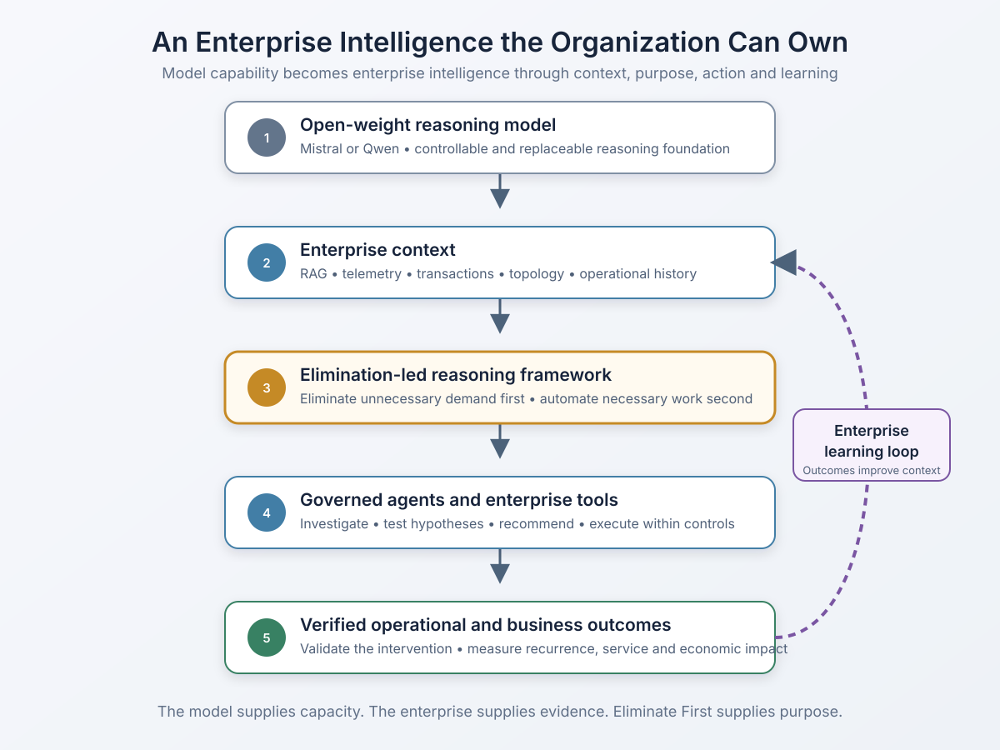

Reasoning models are having their moment.
This week's discussion around GPT-6 Astra, recurrent depth and hidden reasoning reflects how quickly models are becoming better at working through complex problems — not merely producing more fluent answers. Sebastian Raschka's analysis of looped transformers describes an important direction: additional computation can improve a model's ability to solve multistep problems without necessarily giving it more knowledge to draw from. The reported use of this architecture in Astra remains unconfirmed, but the broader movement is clear. Models are becoming more capable of reasoning over difficult tasks.
For enterprises, however, the more consequential question is not which model reasons best this week. It is whether the enterprise can turn that advancing capability into an intelligence of its own.
In an earlier article, I argued that the intelligent enterprise is not a dashboard — it is a conversation. A business leader should be able to ask why margin is declining, why throughput has dropped or why an operational delay persists, and receive an answer grounded across the systems where the evidence resides.
That raises the implementation question: what sits on the other side of that conversation?
It does not have to be permanent dependence on a rented frontier model. A capable open-weight model such as Mistral or Qwen can provide the reasoning foundation. But the model alone is not enterprise intelligence. What makes it enterprise intelligence is everything the organization builds around it: proprietary context, an explicit reasoning framework, governed access to tools, outcome verification and a learning loop.
Reasoning capacity is not a reasoning objective
A powerful reasoning model can examine a problem, form hypotheses, work through alternatives and recommend an action. What it does not inherently know is how a particular enterprise wants that problem approached — or what the enterprise is ultimately trying to optimize.
Consider a repetitive IT operations incident: Nagios reports that a device in a Meraki software-defined network is down or unavailable. The alert automatically creates a ServiceNow ticket. An outsourced service provider assigns it to an L1 network operations team, which performs basic checks and usually escalates it to L2 or L3.
Ask even a very capable general-purpose reasoning model what to do, and it will probably produce a sound, conventional answer:
- Validate the Nagios event.
- Check reachability and device status in the Meraki dashboard.
- Review recent changes.
- Follow the troubleshooting runbook.
- Collect diagnostic evidence.
- Escalate to L2 or L3 when the documented threshold is met.
That is competent reasoning. It may improve consistency, reduce handling time and make the escalation more complete. It also accepts the existing IT service management construct as a given: the event becomes a ticket, the ticket goes to L1, and L1 follows a runbook before handing it to the next tier.
The model has optimized the work. It has not questioned the demand.
This is the limitation of reasoning capability without a reasoning objective. The model can determine how to execute the established process well, while leaving unanswered the more valuable question: why does this repetitive work continue to exist?
RAG is necessary — but retrieval is not intelligence
Retrieval-augmented generation is an essential part of the implementation. It can provide the model with the enterprise evidence that was not contained in its original training:
- Nagios event and polling history
- Meraki device status, topology and telemetry
- ServiceNow incidents, assignment paths and resolution records
- Change and maintenance windows
- Known-error records and runbooks
- Site, application and business-service dependencies
- Provider effort, cost and service-level performance
Without this grounding, even the best reasoning model is working from a generic understanding of network operations. It can offer plausible troubleshooting, but it cannot know that a large share of a company's device-down tickets are downstream symptoms of the same set of upstream failures, or that a particular alert routinely clears before L1 begins work.
But RAG alone does not solve the problem either. Retrieval can tell the model what happened before, what the runbook says and how previous tickets were resolved. If the retrieved knowledge reflects a labor-centric operating model, the model may simply reproduce that model more efficiently.
It may retrieve the runbook faster. It may summarize the ticket better. It may even recommend the correct escalation group. None of that necessarily eliminates the recurring demand.
RAG supplies the evidence. A reasoning framework determines what the system does with it.
Building an enterprise intelligence the organization can own
An enterprise does not need to reproduce the scale or architecture of the leading frontier model. It needs a sufficiently capable reasoning foundation for bounded enterprise problems, combined with the context and operating logic that make those problems unique.

Architecture for an enterprise intelligence the organization can own
The architecture has distinct layers, and none is a substitute for another:
| Component | Role in the enterprise intelligence |
|---|---|
| Open-weight model such as Mistral or Qwen | Provides a controllable and replaceable reasoning foundation |
| RAG and enterprise context | Supplies current, proprietary evidence from across the organization |
| Elimination-led framework | Establishes the objective and sequence through which the evidence is evaluated |
| Agents and tools | Investigate systems, test hypotheses and execute permitted actions |
| Governance | Defines access, confidence thresholds, approvals and boundaries for action |
| Outcome verification | Determines whether the diagnosis and intervention actually worked |
| Learning loop | Converts validated results into reusable enterprise knowledge and improved reasoning |
The open-weight model matters because it gives the enterprise greater control over deployment, adaptation, evaluation and economics. It can be changed as model capabilities evolve. The durable intellectual property is not simply a copy of the model weights. It is the proprietary reasoning system built around them: the enterprise ontology, operational patterns, decision policies, tool integrations, validated interventions and accumulated outcome history.
Eliminate First is the missing reasoning framework
My operating principle — Eliminate First. Automate Second. — changes the order in which the intelligence approaches work.
Instead of beginning with "How should this ticket be triaged?", the system begins with a different hierarchy:
- Is the demand valid, or is it a false, duplicate or transient signal?
- Is this event the actual problem, or a downstream symptom of another condition?
- Why does the condition recur?
- Can its source be removed or prevented?
- What necessary operational work remains after elimination?
- Which residual work is deterministic and safe to automate?
- What genuinely requires human judgment?
- Did the intervention improve the intended service or business outcome?
- What should the system learn so the work does not recur?
This does not prevent the model from using an ITSM process when one is necessary. It prevents ITSM from becoming the unquestioned boundary of the model's reasoning.
The distinction is significant. Without the framework, the model helps the organization process tickets. With the framework and the right enterprise context, it can help the organization determine which tickets — and which layers of work around those tickets — should cease to exist.
From a Meraki alert to an elimination decision
Return to the "network device down or unavailable" event.
At the level of a single ticket, the model checks the device, upstream connectivity, WAN state, power, switch port, PoE, recent changes and the health of the Nagios monitoring path. That is useful diagnosis.
Enterprise intelligence examines the pattern across tickets. It may discover that:
- Short-lived failures routinely recover within two Nagios polling cycles.
- One upstream switch or WAN outage generates dozens of downstream device tickets.
- Devices remain online in the Meraki cloud while the Nagios polling path is unavailable.
- Scheduled maintenance still produces actionable incidents.
- L1 repeats the same checks but has neither the access nor authority to resolve the condition.
- L2 or L3 repeatedly applies the same known remediation.
- A subset of incidents reflects a recurring power, cabling, configuration or carrier problem that has never been removed at its source.
Those findings produce a very different set of actions:
| Observed pattern | Conventional response | Elimination-led response |
|---|---|---|
| Device recovers before anyone acts | Close the ticket within SLA | Change persistence thresholds so the ticket is never created |
| Multiple downstream devices fail together | Triage and close multiple tickets | Correlate them into one upstream incident and suppress consequential alerts |
| Meraki shows the device online but Nagios cannot reach it | Follow the connectivity runbook and escalate | Correct the monitoring path, polling configuration or access policy |
| Incident occurs during approved maintenance | Close as maintenance-related | Integrate change context and suppress the event automatically |
| L1 consistently gathers data and escalates | Improve the L1 runbook | Automate evidence collection and route the true exception directly to the resolver |
| L2 repeatedly performs the same safe recovery | Document the procedure | Automate the approved remediation and verify service restoration |
| The same physical or carrier fault recurs | Continue meeting incident SLA | Remove the systemic cause through problem management and investment |
In this model, automation follows elimination. After false, duplicate, transient and consequential demand has been removed, automation is applied to the necessary residual work. Human expertise is reserved for ambiguity, risk and novel exceptions — not used as a permanent processing layer for a known pattern.
From conversation to enterprise learning
The user experience can still be conversational. A network leader might ask:
Why do network-device-down tickets keep reaching L2?
But the answer is no longer a summary of ServiceNow records. The intelligence works across the evidence and might respond:
Most of these incidents are not independent device failures. They are downstream symptoms of upstream connectivity loss, transient events that recover before intervention, or monitoring-path failures where the Meraki device remains online. Correlation and threshold changes can eliminate a large portion of the tickets. Automated evidence collection can remove the L1 touch from most of the remainder. Only the unresolved exceptions require network-engineering judgment.
More importantly, the conversation can continue:
- Which tickets can be eliminated safely?
- What caused the remaining incidents?
- Which proposed change would prevent the most recurrence?
- What would be the effect on availability, provider effort and cost?
- Which actions can be executed without approval?
- Did the change actually prevent the tickets from returning?
That is how a conversation becomes an operating capability. The intelligence does not simply answer. It investigates, recommends, acts within governance, verifies the result and learns from the outcome.
Owning how the enterprise thinks
Frontier models will continue to improve. Some will use more test-time computation. Some may use recurrent depth, new routing mechanisms or architectures that have not yet emerged. Open-weight models will improve alongside them.
Enterprises should benefit from those advances — but their strategy cannot be reduced to selecting whichever model leads this week's benchmark.
The real strategic asset is the intelligence the enterprise creates around the model:
- What evidence it can access
- How it understands relationships across the business
- Which objectives guide its reasoning
- What it is permitted to do
- How its conclusions are validated
- Which outcomes it learns from
The best reasoning model, without enterprise context, will give a sophisticated generic answer. RAG can make that answer enterprise-aware. But only an explicit reasoning framework determines whether the system will optimize the work it sees — or challenge why that work exists.
The next enterprise advantage will not come from having access to the same reasoning model as everyone else. It will come from owning how intelligence reasons about the enterprise.
The model supplies the capacity to reason. The enterprise supplies the evidence. Eliminate First supplies the purpose.